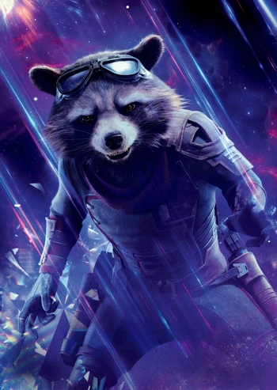
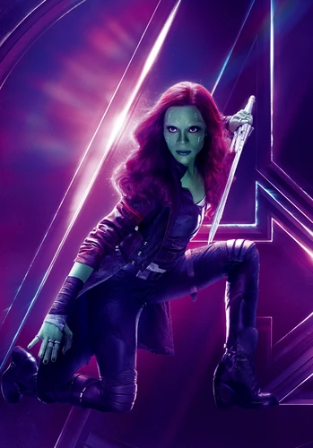
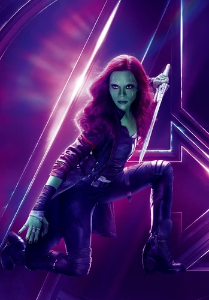

About me
Groot is a Flora colossus and the accomplice of Rocket Raccoon. Together, the pair had traveled the galaxy picking up bounties until they met Star-Lord and Gamora just before the four of them were captured and put into the Kyln, where they also met Drax the Destroyer. There, they agreed to work together to escape and sell the Orb for a massive profit. However, when it was discovered that the Orb contained one of the Infinity Stones which was being sought out by Ronan the Accuser, Groot convinced his friends to risk everything to stop Ronan's diabolical plans. During the Battle of Xandar, Groot sacrificed his own life to save his new friends. However, part of his destroyed body was planted by Rocket to birth a new Groot, as they joined the Guardians of the Galaxy.
As the new Groot began to grow, he stayed with the Guardians and endeavored with them on many adventures. They were soon hired by the Sovereign to destroy an Abilisk, but they were then targeted by their former employers due to Rocket who double-crossed them. During the escape, they had met Peter Quill's father Ego while Groot and Rocket, along with Yondu Udonta, were captured by Taserface's faction of the Ravagers, but Groot was able to help them all escape. Groot then joined his allies and assisted them in destroying Ego and saving all his friends, but Udonta died. Over the next four years, Groot continued to grow and started exhibiting the personality of an adolescent.
Both Groot and Rocket then left the Guardians temporarily to accompany Thor to Nidavellir in order to help his mission to stop Thanos from completing the Infinity Gauntlet. After they had helped Thor obtain his weapon, Stormbreaker, Groot and Rocket traveled to Earth using the Bifrost Bridge and joined the Battle of Wakanda. Groot fought alongside Captain America and attempted to attack Thanos; however, when the Mad Titan amassed all six of the Infinity Stones, he succeeded in eliminating fifty percent of the universe's population, which resulted in Groot's death.
Five years later, the Avengers managed to resurrect the victims of the Snap, restoring Groot. Alongside Winter Soldier, he left Wakanda through an Inter-Dimensional Portal and joined the Battle of Earth. In the aftermath of the battle, Groot attended Tony Stark's funeral and rejoined the Guardians, now including Thor, on their adventures. Groot and the Guardians worked with Thor on several missions, but they went their separate ways after the Battle of Indigarr in order to protect worlds that had lost their gods to Gorr the God Butcher.
My Friends
 
